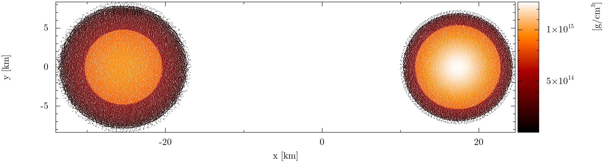

Documentation of

Figure caption: Projection of the SPH particles on the plane, for a binary neutron star system with gravitational masses of (left) and (right), with equation of state 'BBKF(DD2-SF) quark-hadron model RDF 1.8 (with electrons)' from the database. The solution was computed with and the software, and the particles were placed with using the Artificial Pressure Method. The color bar shows the baryon mass density. The plot was made with and .
SPHINCS_ID is a modular, object-oriented, OMP parallelized Fortran 2018 code to produce initial data to be evolved in time with the General Relativistic, Lagrangian Hydrodynamics, Fortran 2018 code SPHINCS_BSSN (1), and the Newtonian, Lagrangian Hydrodynamics, Fortran code MAGMA2 (2).
Presently, SPHINCS_ID does not solve any equations for the initial data, but acts as an interface between an initial data solver and SPHINCS_BSSN or MAGMA2. It reads the data computed by the solver and produces the SPH and BSSN ID to be read and evolved in time with SPHINCS_BSSN or MAGMA2.
Currently, it produces initial data for:
The modular and hierarchical structure of the code makes it easy to extend it to be able to set up initial data for other types of physical systems and other formulations of the Einstein equations. The code is currently under heavy development.
SPHINCS_ID needs SPHINCS_BSSN to be compiled.
Copyright (C) 2020, 2021, 2022 Francesco Torsello.
SPHINCS_ID is free software: you can redistribute it and/or modify it under the terms of the GNU General Public License as published by the Free Software Foundation, either version 3 of the License, or (at your option) any later version.
This program is distributed in the hope that it will be useful, but WITHOUT ANY WARRANTY; without even the implied warranty of MERCHANTABILITY or FITNESS FOR A PARTICULAR PURPOSE. See the GNU General Public License for more details.
You should have received a copy of the GNU General Public License along with SPHINCS_ID. If not, see https://www.gnu.org/licenses/.
Copyright (C) 2020, 2021, 2022 Francesco Torsello.
Permission is granted to copy, distribute and/or modify this documentation under the terms of the GNU Free Documentation License, Version 1.3 or any later version published by the Free Software Foundation; with no Invariant Sections, no Front-Cover Texts, and no Back-Cover Texts. A copy of the license is included in the section entitled "License", reachable by clicking "More" at the top of the webpage, or at https://www.gnu.org/licenses/fdl-1.3.html/.